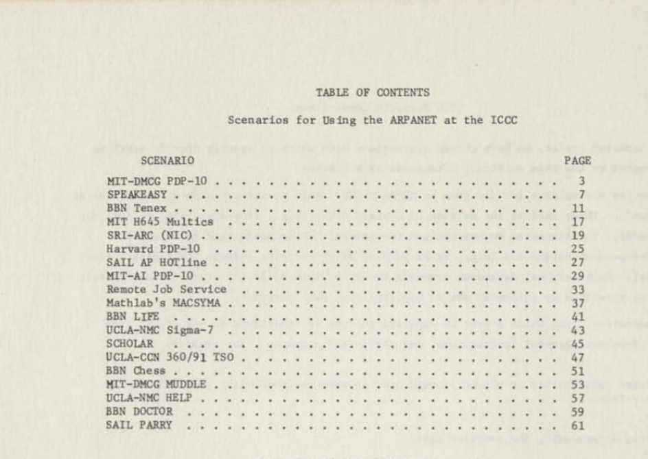

Terminal
Use 2 Finger pinch to zoom
UPDATED (AND MORE ENTERTAINING) SCENARIOS TO TRY
Triple-click a line, copy with Ctrl-C, and paste in the terminal with Ctrl-Shift-V.

ARPANET NETWORK CONTROL CENTER @ BBN, NODE 5
☐ARPA-server
|
☐ARPA-terminal
|
NODE STATUS: [IMP#]- 0=IMP/Host Online, 5=Self/OK, 71=IMP On/Host Offline, 70=IMP Offline